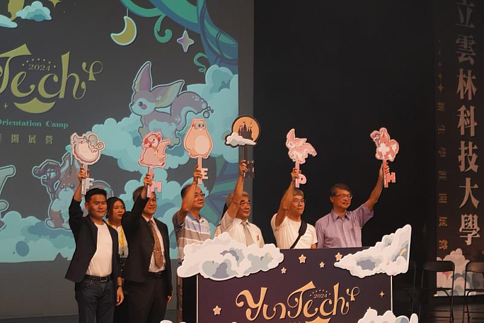

開學與新學期
秋天是開學的季節，新學期開始，校園裡注入了新的活力。這是迎接新生的時刻， 新生們帶著對大學生活的期待與好奇，開始探索這片廣大的校園，熟悉新的環境與同學。
校園裡處處可見新生的身影，他們在學長姐的引導下認識校園，在各種迎新活動中建立友誼。 從新生訓練到校園導覽，每個活動都是為了幫助新生快速融入雲科大的大家庭。
這個季節，校園裡充滿了迎接與融入的氛圍。新生們在探索中建立新的友誼， 在學習中找到自己的方向，在活動中發現自己的興趣。這是成長的季節，也是新旅程的開始。
